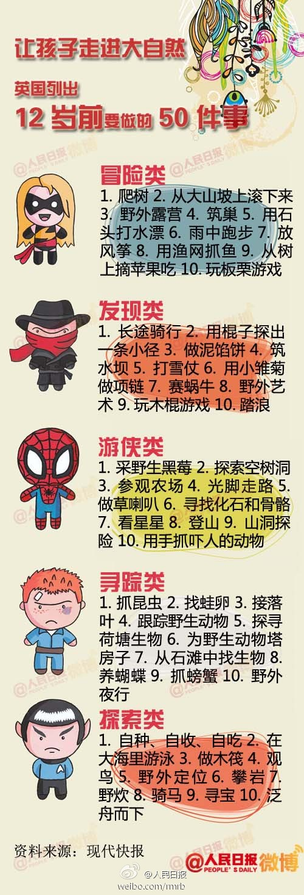

今天在社区球场看到美国小孩踢球，恍然大悟为什么美国足球是走英国足球的粗犷道路的。他们一帮9，10岁的小孩在踢标准球场的比赛阿！这和你想象的拉丁地区街旁巴掌大的地方挤上几十个孩子提出来的孩子风格不一样啊。足球发达国家的足球风格，基本上是和富足程度成正比。穷则技术流，富则球风简练粗犷。
很多年前就听人说“书店看书，书市买书”。我一直就疑问，都这样书店还怎么经营的下去？是不是我们喜欢的书店就很快就要被书市摧毁了？当然后来发现书市没有摧毁书店，网络购物摧毁了书店。我不知道现在书市除了被故人怀念还有多少存在的意义。//@三联韬奋书店: @央视新闻:【陪伴22年，春季地坛书市停办……】据北京日报，闻名全国的北京地坛书市今春停办了，原因是书市成本高、风险大，网上书店及盗版书冲击，主办方改制，无资金支持等。今后是否能恢复，目前还没有确切答案。你记得地坛书市吗？老朋友离去，和它说声再见吧！
今天上午去图书馆卖旧书的地方，恰好看到桌子下面的箱子里闪出一套熟悉的图书“中国少年儿童百科全书”。这书好像小时候经常在哪见到，虽然从来没翻开过，但还是感觉很亲切。不由怀念起小时候天经地义的求知和问为什么的时候来了。长大了如果还对什么感兴趣就了解一下学习一下，会被人说不务正业了吧。
我真是太较真了。中午打印东西发现打印机卡纸了，发现是一些保鲜膜之类的东西卡在里面了。来回弄也弄不出来，不小心就整了一下午。最终把打印机拆了一半才把那一团保鲜膜拿出来。唉，本来打算睡一下午的。说起来这打印机也五年了，还不如扔了买个新的呢。为这个浪费一下午真不值得。
印象中，中文图书缺乏面向受过高等教育的人看的社会或自然科学类的图书——要么像儿童图书一样，要么太专业要费力才能理解。英语图书里这个层次的书就多很多。标准是：有注出处的脚注；分得清什么是公认常识，什么是哪些人的观点，什么是作者的观点；一章出现不多于5个我之前不懂的概念且都予以解释。
前两天跟@fanguo9 说，现在拜仁在全欧洲只有一个克星，就是多特蒙德，欧冠运气是够差。@新浪体育:【德甲-戈麦斯追平诺伊尔扑点 10人拜仁客场1-1多特】详情：网页链接 德甲第32轮开始1场焦点战，拜仁客场1比1战平多特蒙德，两队分别终结联赛14连胜和6连胜。格罗斯克罗伊茨首开纪录，戈麦斯随即扳平。下半时，诺伊尔扑出莱万多夫斯基点球，拉菲尼亚两黄下场。
几乎12岁之前都没做过……应该大农场啊 //@又红又专甘大萌: @糊涂的小无知 谢谢让我成为大自然的孩子@人民日报:【12岁之前要做的50件事 你的童年完整吗？】爬树、打滚、下水摸鱼，蓝天、白云、新鲜空气……你的童年有这些户外记忆吗？近日，英国一机构列出12岁前要做的50件事，呼吁让孩子走出家门走进大自然。都做过？恭喜，你的童年完整了。还差好多？没关系，照着清单补补。与其盯着屏幕，不如把自己赶出屋子。 
如果一个富有的商人几十年不断资助一个有点名气的好朋友来发表他的社会研究著作以及社会批判评论，还全力支持他主张的社会运动，你会怎么想象这是因为什么？是借以实现自己的理想？纯粹的深厚友谊？或者是对他才华的喜爱和吸引？两人搞基或者抓了把柄什么的？因为我在想马恩是一种什么样的关系呢？
 网页链接
网页链接